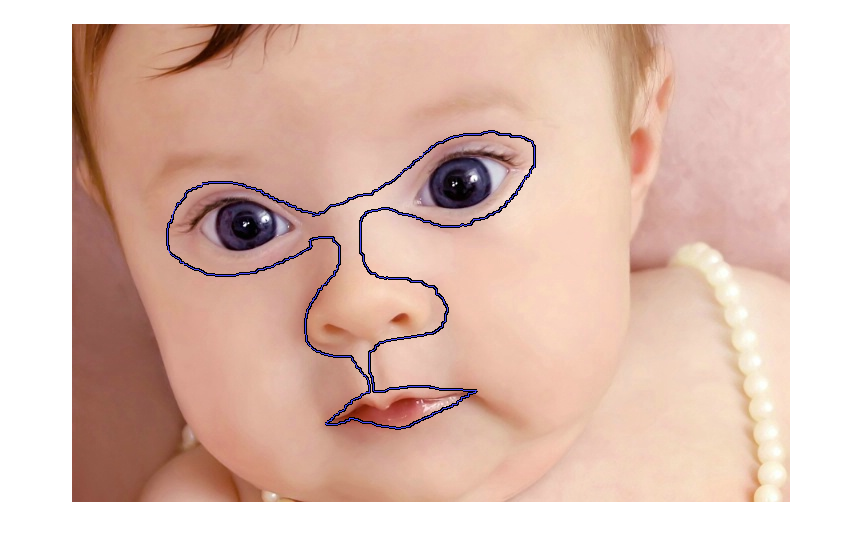
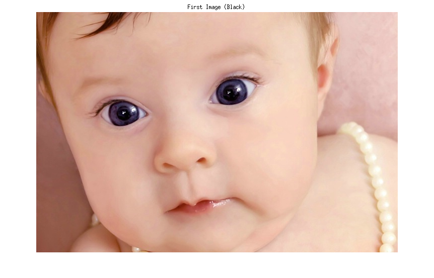
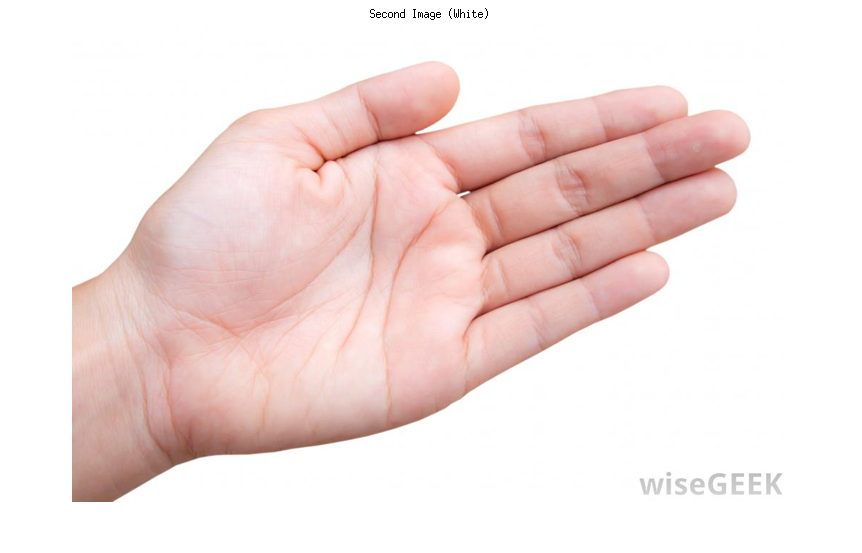
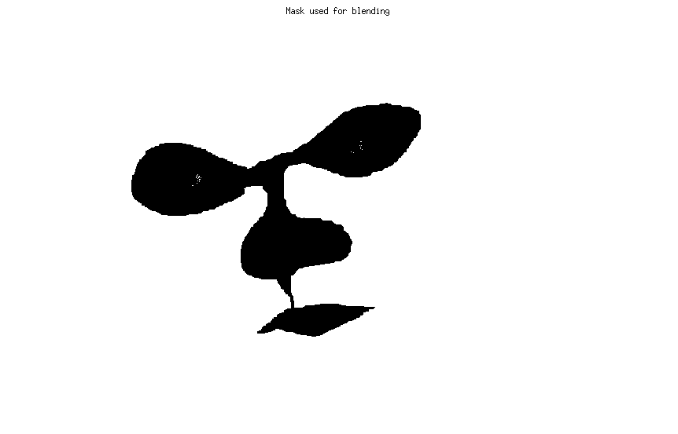
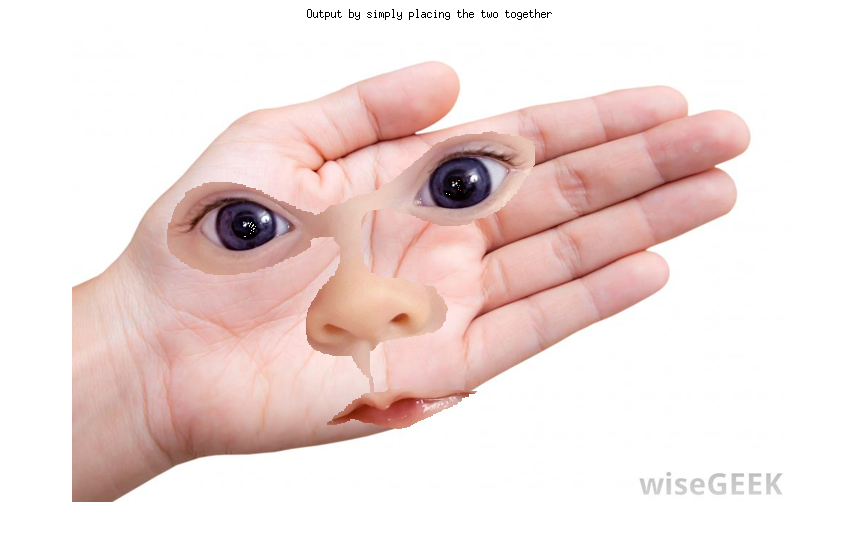
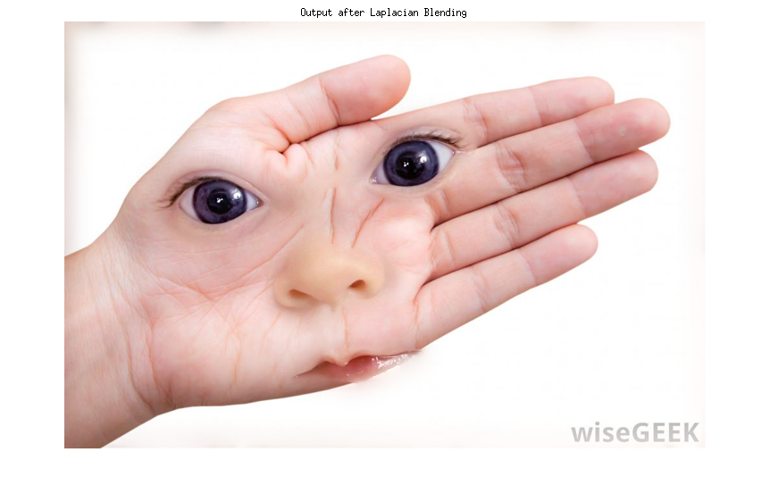

clear all;
close all;
clc;
black = imread('test.jpg');
white = imread('hand-7.jpg');
white = imresize(white,[478 718]);
black_mask = logical(black(:,:,1));
figure;
imshow(black);
f = imfreehand;
bw = createMask(f);
outI = bw.*black_mask;
outI = imcomplement(outI);
outI1(:,:,1) = outI;
outI1(:,:,2) = outI;
outI1(:,:,3) = outI;
mask = outI;
maskr = mask;
black_im = uint8(zeros(size(black)));
for i = 1 : 3
b = black(:,:,i);
out = zeros([size(black,1) size(black,2)]);
out(maskr == 0) = b(maskr == 0);
black_im(:,:,i) = out;
end
black_im = uint8(black_im);
white_im = uint8(zeros(size(white)));
for i = 1 : 3
b = white(:,:,i);
out = zeros([size(white,1) size(white,2)]);
out(maskr == 1) = b(maskr == 1);
white_im(:,:,i) = out;
end
white_im = uint8(white_im);
outStitch1 = black_im + white_im;
mask = outI1;
outStitch2 = LaplacianBlend(black, white, mask);
figure;
imshow(black);
title('First Image (Black)');
figure;
imshow(white);
title('Second Image (White)');
figure;
imshow(mask);
title('Mask used for blending');
figure;
imshow(outStitch1);
title('Output by simply placing the two together');
figure;
imshow(outStitch2);
title('Output after Laplacian Blending');
     